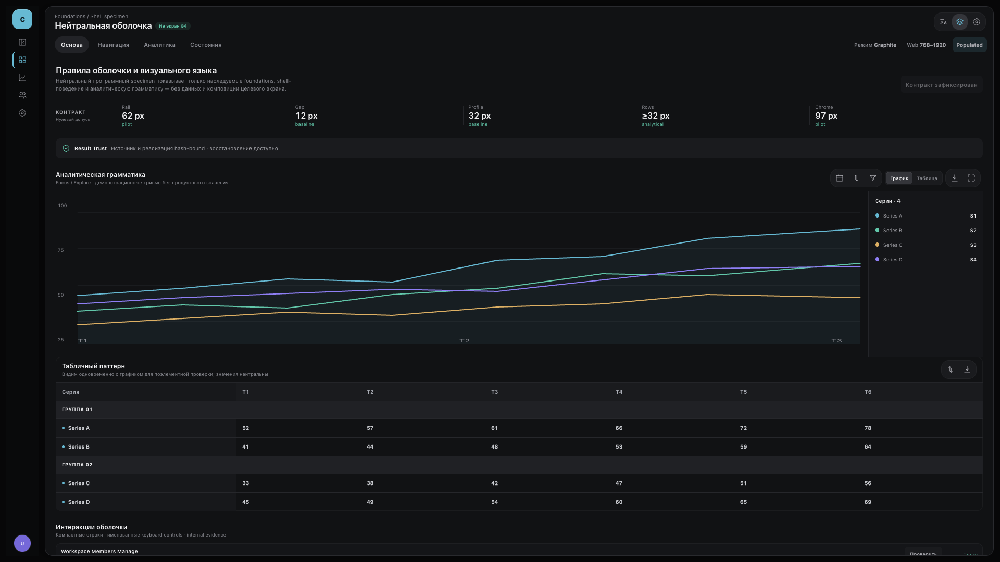
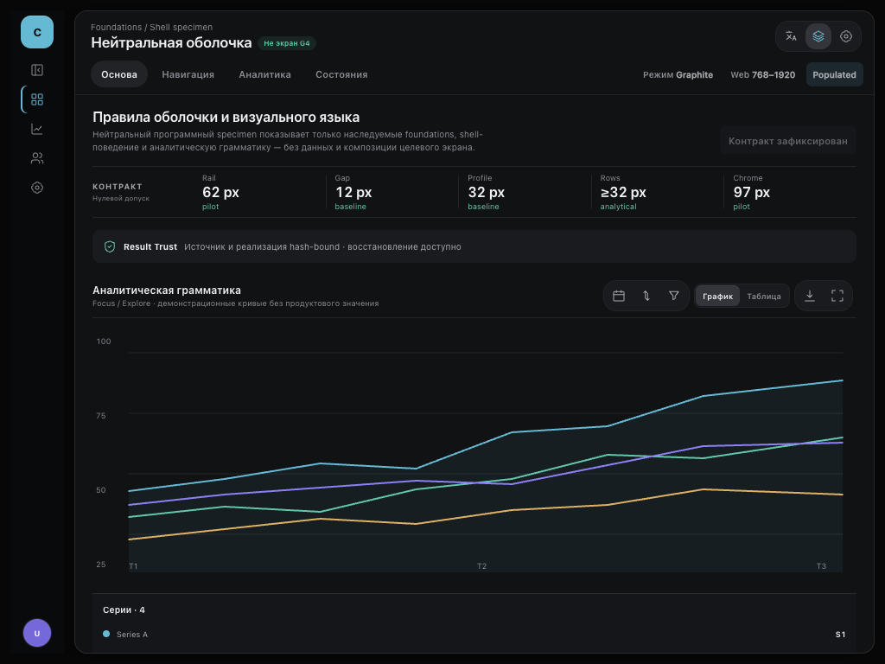

G3 · основы и оболочка
Нейтральная оболочка показывает визуальный язык, который последующие экраны обязаны наследовать из принятого пилота. Она не утверждает продуктовую композицию конкретного экрана.
Главное правило: каждый элемент с соответствующим паттерном пилота получает весь набор применимых правил — типографику, цвет, размеры, отступы, радиусы, границы, состояния, focus, motion и responsive-поведение. Частичное наследование и «похожий стиль» не допускаются.




Что принимается на G3
Фундамент, полная типографика, компоненты и состояния, оболочка/компоновка, responsive Web, focus и motion как обязательная основа для G4. Продуктовое содержание и композиция будущих экранов не принимаются.
- source_native · program
- source_anchor · web-768
- source_anchor · web-1024
- source_anchor · web-1440
- source_anchor · web-1920
- candidate · program
- candidate_anchor · web-768
- candidate_anchor · web-1024
- candidate_anchor · web-1440
- candidate_anchor · web-1920
- render_provenance · web-768
- render_provenance · web-1024
- render_provenance · web-1440
- render_provenance · web-1920
- inheritance · program
- standard_conformance · program
- screen_contract · program